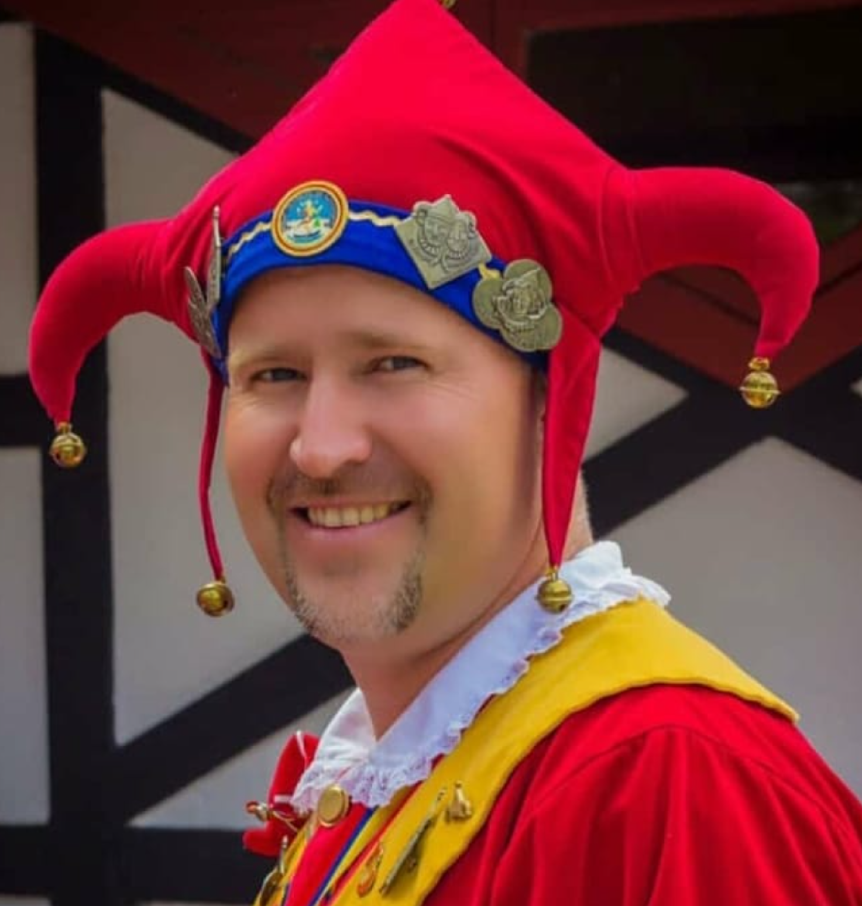

Fotografía
del personaje
del personaje
Primer cargo — Escala jerárquica
Oberzunftmeister
Maestro principal
Es el primer miembro en la escala jerárquica. Para optar por este cargo se debe tener una larga y reconocida trayectoria dentro de la organización, además de haber pasado por los cargos de Oberjokili, Stadttier y carga estandarte por lo menos alguna vez en su actividad como Jokili.
No viste como arlequín sino que posee un traje diferente compuesto por: un pantalón corto rojo amarrado justo debajo de las rodillas, medias amarillas, zapatos jokili, camisa blanca, chaleco rojo con botones y capa camisón vinotinto con solapas amarillas. Sombrero de tres puntas vinotinto y no usa máscara.
Pantalón corto rojo
Medias amarillas
Chaleco rojo
Capa vinotinto
Sin máscara
Sombrero tres puntas
Miembros que han ocupado este cargo desde la fundación
- Pablo Dürr Misle — 17 de febrero de 1977 al 21 de enero de 2006
- Ralf Andrés Muttach Fehr — Desde el 21 de enero de 2006 al ????
- Ronald Gutmann — Desde el ??? al ?????

Titular actual
Argenis Aurelio Gerig Smith
Desde ????

 -->
-->